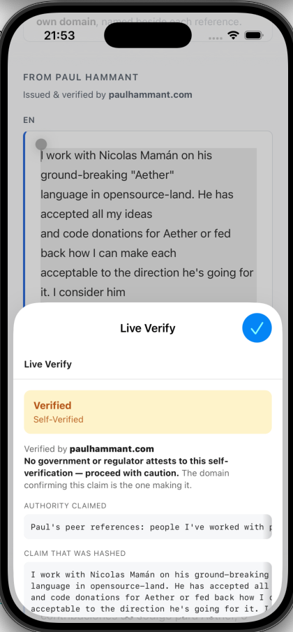

Amber Is the Honest Answer
Here is a verification that succeeded. The hash matched, the issuer’s domain answered, nothing failed. And the app deliberately refused to show you green.

This is Live Verify running as a Safari Web Extension on iOS, which is new. Select a claim on a page, open the extension, and it hashes the text and asks the issuer’s domain whether that hash is one it stands behind. Same normalization, same SHA-256, same lookup as the Chrome extension and the native apps — literally the same JavaScript, generated from one canonical source, so the hashes cannot drift apart.
But the interesting part is not that it worked. It is what the app says after it works.
Green would have been a lie
The claim in that screenshot is a professional reference I wrote about someone I work with. I published it on my own domain and published its hash there too. When the extension looks that hash up, my domain says yes.
Which proves exactly one thing: the text has not been altered since I published it. That is genuinely useful — it is tamper-evidence, and it is the whole point of the hash. But it says nothing whatsoever about whether the reference is true, or whether I am someone whose reference should carry weight. I am vouching for my own words. The domain confirming the claim is the domain making it.
A green tick would have collapsed those two very different things into one signal. So the app renders amber and says the quiet part out loud:
No government or regulator attests to this self-verification — proceed with caution. The domain confirming this claim is the one making it.
It used to say “Self-verified (no authority chain)”. That was accurate and useless: it described a missing data structure to someone who is trying to decide whether to rely on a document. Naming what is absent — a government, a regulator — does the work that “no authority chain” never did.
The colour matters more than it sounds. On one of our clients, self-verified claims were being drawn on the confirmed green background, pixel-identical to a claim backed by a fully walked chain of endorsers. Two completely different trust situations, one colour. That is fixed everywhere now.
“Authority claimed”
An issuer can publish one line stating what kind of authority stands behind its verifications. A tax authority says so. A university says so. Mine says Peer references, because that is what it is.
The label above it reads Authority claimed, and the word is doing deliberate work. Nobody has endorsed that sentence. It is me describing myself, presented as such. When there is an endorser in the chain, that endorser has implicitly signed off on the wording — because they hash the issuer’s whole metadata file — and it stops being merely claimed.
That field existed in the spec for months and had never once been displayed by any client. The code that reads it sat behind a check for an endorser, so the one line that distinguishes “national tax authority” from “bloke with opinions” was invisible in precisely the case where it carries the most weight.
Read the domain the document named
Look at the attribution line: paulhammant.com. That is the domain printed beside the reference, and the domain a reader would judge.
It did not say that until I wrote this post. It said
paul-hammant.github.io.
My hash files are parked on GitHub Pages. My metadata declares that with a
hashesHostedAt field, and every client was deriving the displayed domain
from wherever the hash file turned out to live — so a claim naming
paulhammant.com was being reported as verified by a domain the document
never mentions. The human reads one name on the page and the app announces another,
which is precisely the confusion this project exists to remove. Worse: because the app
emphasises the registrable domain, it was putting the weight on
github.io — telling readers that GitHub stands behind my
opinion of a colleague.
The rule it should have followed: Barclays could employ a verification provider for a couple of years and then bring it all in-house, and nothing should stop working or look different. Where the bytes live is infrastructure, like a CDN. Nobody prints “served by Akamai” beside a bank’s name.
So the displayed authority now comes from the verify: line in every
client, and the function that checks a hash takes that domain as a required argument
— it throws rather than guess. Hosting moved out of the trust display entirely.
The emphasis logic still matters, though, for claims whose verify: line
does name a shared host. Showing the whole hostname with the registrable part in
bold does two jobs at once: you see who the tenant is, and the weight sits on the part
someone actually registered, renews, is billed for, and can be compelled or seized over.
The spoof case proves it —
edinburgh.ac.uk--___dir.github.io shows you the deception
and the real accountability in a single string.
Which leaves an open question we have started writing down rather than answering: when
a claim is published on foo.github.io, GitHub’s name ends up beside a
claim it has never seen, and GitHub has no say in that. The mirror image of an issuer
naming its endorser would be a namespace operator disowning its tenants — a file at
the suffix itself saying “this verification is not endorsed by us”. It is
worth nothing until an operator publishes one.
The claim, on its own lines
The pane at the bottom shows the exact text that went into the hash. It scrolls sideways rather than wrapping, and that is not a styling preference.
Line breaks are part of what gets hashed. A soft-wrapped display invents line structure that is not in the bytes — so the one pane whose entire job is to show you the input exactly was quietly misrepresenting it. One client was breaking lines mid-word. Real lines now, in every client.
The page that stopped grading itself
The same principle took something away from our own front page.
It carried a live demo: edit a claim, press Verify, watch a green “Verified” appear or a red failure when you changed a character. It ran the real pipeline. It was also quietly self-defeating, because the verdict was drawn by the page, in a box the page controls. Any page can print a green tick — including a convincing copy of ours. The reader best equipped to notice that is exactly the reader we most need to convince, and the habit it teaches, look for the badge in the page, is the one this project exists to break.
So the demo now stops one step earlier. It hashes your text, builds the issuer’s lookup URL, and hands it to you as a link. You follow it, and the answer arrives in your own address bar from the issuer’s domain: 200 if they stand behind that exact text, 404 if they have never published it. Edit a character and the address changes completely. Same lesson, and now the page demonstrates the trust boundary instead of contradicting it.
There is a test that asserts no verdict is ever rendered there. If someone reinstates the tick, the build fails and they have to argue with the test’s name.
What this does and does not prove
- It proves the text is unaltered since the issuer published its hash. Change one byte and the lookup misses.
- It proves the issuer stands behind it right now — the answer is live, so a withdrawn or revoked claim stops verifying.
- It does not prove the claim is true. A self-verified reference is one person’s word, cryptographically pinned. Pinning a claim does not make it accurate.
- It does not confer authority. Nothing you write about yourself in your own metadata will turn amber into green. Only an independent endorser does that, and inventing one you control would be trust theatre.
Which is why amber is not a defect to be fixed on the way to green. For a personal reference, amber is the correct reading. There is no authority on earth that endorses my opinion of a colleague, and a system that implied otherwise would be worse than useless.
The general rule
Every change here comes from the same instinct: a verifier must never claim more than its evidence supports, and must never let a reader infer more than it said. Green means an independent authority stands behind this. Amber means it verified, and here is exactly how far that goes. The claim is shown as bytes, not as a paraphrase. The domain is shown with the accountable part emphasised. And a page never grades itself.
None of it makes the tool look more impressive. All of it makes it more useful when something is actually at stake, which is the only moment any of this matters.